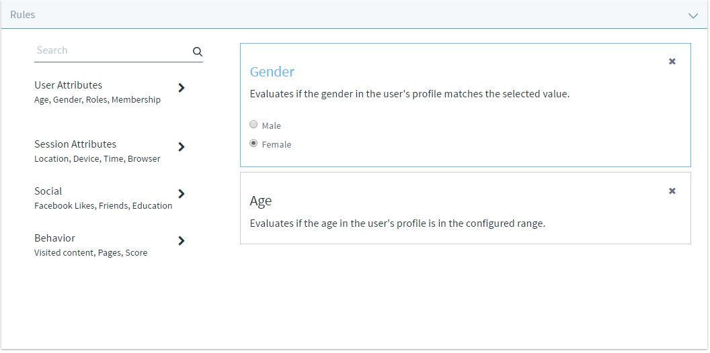
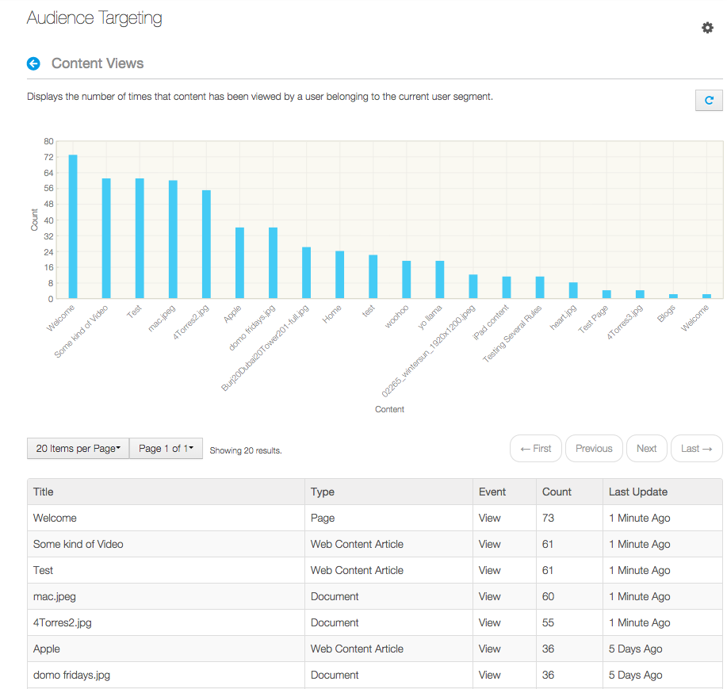

The Audience Targeting section of the Configuration section of the Site Administration area of the Menu allows you to manage user segments and campaigns.
Figure 1: Click on Configuration → Audience Targeting in Site Administration to manage user segments and campaigns for a site.
A user segment represents a subset of the total group of portal users (logged in or not). A user segment is defined by one or more rules that users have to match in order to belong to that user segment. Open the Site Administration menu and click Configuration → Audience Targeting → Add User Segment ( ) to add a new user segment. All the rules that have been deployed appear under the Rules heading. Drag a rule to the right to apply the rule to the user segment. Once a rule has been applied, you can adjust the rule’s parameters. For example, once the Gender rule has been applied, you can select Male or Female. Once the Age rule has been applied, you can select an Older than value and a Younger than value. For example, you could define a Women over 30 user segment by applying the Gender rule and selecting Female, and applying the Age rule and setting the Older than attribute to 30. Once you’ve customized the rules for the new user segment, entered a name and, optionally, a description, click Save to actually create the user segment.
) to add a new user segment. All the rules that have been deployed appear under the Rules heading. Drag a rule to the right to apply the rule to the user segment. Once a rule has been applied, you can adjust the rule’s parameters. For example, once the Gender rule has been applied, you can select Male or Female. Once the Age rule has been applied, you can select an Older than value and a Younger than value. For example, you could define a Women over 30 user segment by applying the Gender rule and selecting Female, and applying the Age rule and setting the Older than attribute to 30. Once you’ve customized the rules for the new user segment, entered a name and, optionally, a description, click Save to actually create the user segment.

Figure 2: After applying the rule, click the rule to expland/collapse it.
To configure permissions for creating, editing, and deleting user segments, visit the Users → Roles section of the Control Panel. Then click on the Actions → Define Permissions button corresponding to the role you’d like to configure permissions for, and search for Audience Targeting Resources.
Both user segments and campaigns are inherited in your site hierarchy. Therefore, user segments and campaigns defined in the Global scope will be available to any site. User segments and campaigns created in a site will be available to all of its child sites.
Custom rules can be created by developers and deployed as OSGi plugins. See the Creating New Audience Targeting Rule Types tutorial for details.
These are some of the rules that are included with the app by default:
The Score Points rule assigns 1 point to a user each time the user views a page or content that’s been categorized under the user segment to which the rule has been applied. Once a user exceeds the configured threshold, the user matches this rule. For example, suppose that your website is about sports and you have pages and content about basketball, tennis, and soccer. You would like to divide your audience into three user segments (Basketball fans, Tennis fans, and Soccer fans) in order to display the most relevant content to them on your site’s front page. After creating these three user segments using the Score Points rule with a threshold of, say, 20, you should appropriately categorize the content which would be most relevant to each user segment. For example, apply the Basketball fans user segment to content about basketball, apply the Tennis fans user segment to content about tennis, etc. Now, every time a user (even a guest user) visits a page or views a piece of content categorized for a user segment to which the Score Points rule has been applied, the user will start accumulating points. Once the user has accumulated enough points, the user will belong to the user segment. After a user has visited more than 20 pages or pieces of content related to basketball, the user will belong to the Basketball fans user segment. Once the user belongs to a user segment, you can use that information to direct more relevant information to the user in your website using the User Segment Content Display application.
Each new user segment that’s created can be used to categorize pages or content.
The Audience Targeting app adds two select buttons to the Categorization section of pages and assets: User Segment and User Segment (Global). These buttons allow you to assign one or more site-scoped or global user segments to the content. This categorization has mainly two purposes:

Figure 7.3: Pages and content can be categorized for user segments.
You don’t have to create categories for each of your user segments. User segments are distinct from regular vocabularies. The Categorization section of pages and assets contains distinct select buttons for user segments and regular vocabularies.
When managing user segments, you can click Actions → Reports next to a user segment to see the list of reports available for each user segment. Click Actions → View Report to view the report or Actions → Update Report to generate a new report. Reports display a summary of interesting information related to each user segment. For example, the Content Views report shows the asset that’s been most viewed by users that belong to the user segment.

Figure 7.4: the Content Views report shows the asset that’s been most viewed by users that belong to a user segment.
Additional reports can be created by developers and deployed as OSGI plugins. See the Reporting User Behavior with Audience Targeting tutorial for details. Reports are generated daily by default. However, you can generate a report at any time. To generate a new report when currently viewing a report, click on the Update Report button in the top right corner.